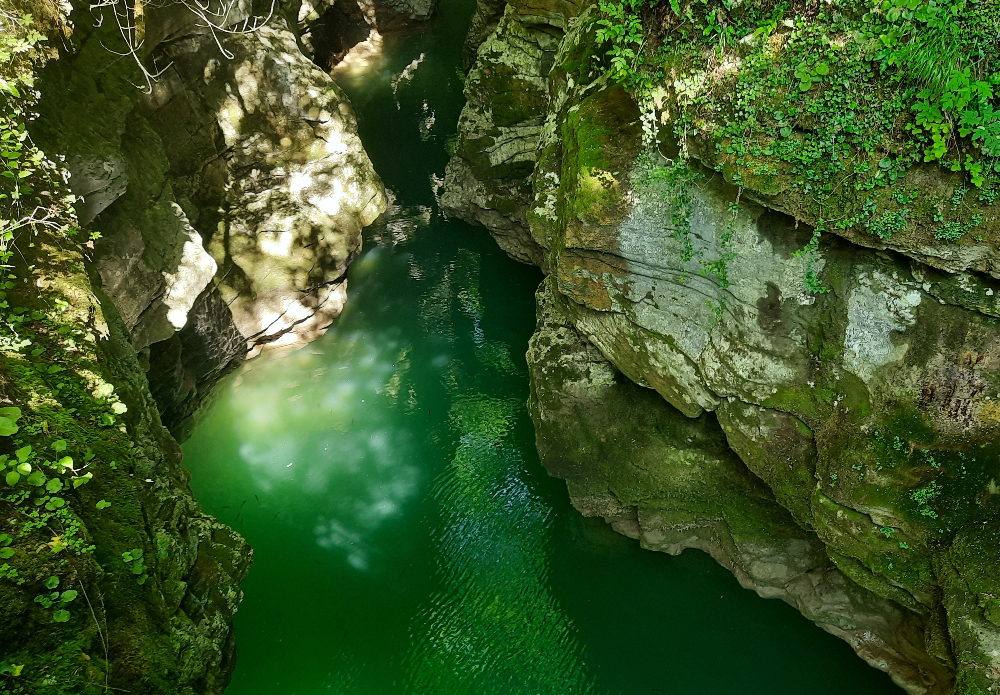
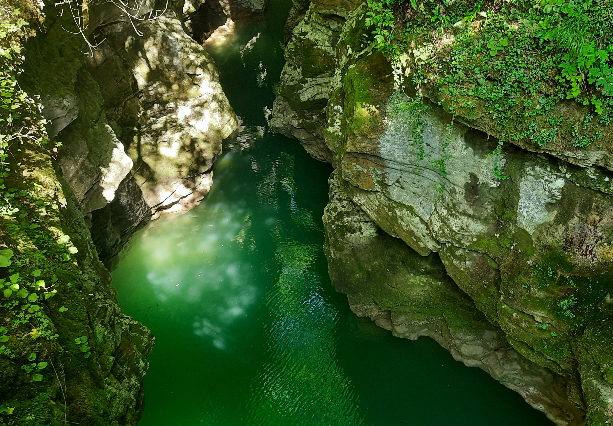

Programmer's travel blog
What Did I Discover in Morocco?
Morocco is a captivating destination that offers a rich tapestry of history, culture, and natural beauty. From the bustling streets of Marrakech to the serene Atlas Mountains, every corner of this country holds remarkable experiences for travelers. Immerse yourself in the vibrant culture of Morocco by exploring its ancient medinas, where you'll find intricate architecture, bustling souks, and the tantalizing aroma of spices filling the air. One of the most iconic attractions in Morocco is the Sahara Desert, where you can embark on camel treks, spend a night under the stars in a desert camp, and witness breathtaking sunsets over the endless sand dunes. Discover the enchanting charm of Morocco's coastal towns, such as Essaouira and Casablanca, where you can stroll along pristine beaches, savor freshly caught seafood, and admire picturesque seaside landscapes. For those seeking adventure, the Atlas Mountains offer a playground for hiking, mountain biking, and trekking, with stunning vistas and remote Berber villages waiting to be explored. Indulge your senses with the flavors of Moroccan cuisine, known for its aromatic spices, savory tagines, and sweet pastries like baklava and msemen, all enjoyed in traditional riads or lively cafes. Experience the warm hospitality of the Moroccan people, who welcome visitors with open arms and take pride in sharing their culture, traditions, and stories with travelers from around the world. Uncover the mysteries of Morocco's ancient history by visiting iconic landmarks such as the Hassan II Mosque in Casablanca, the medieval city of Fes, and the Roman ruins of Volubilis. Immerse yourself in the vibrant colors and lively atmosphere of Morocco's festivals and celebrations, where music, dance, and traditional rituals come together to create unforgettable experiences. With its rich tapestry of landscapes, cultures, and experiences, Morocco offers a truly immersive journey that will leave you with memories to last a lifetime.


.jpg)


Summer in the Alps - Snow, Heat, and Green Mountains

As the summer sun climbs high in the azure sky, the Alps shed their wintry cloak of snow, revealing a new realm of vibrant life and adventure. Towering peaks, once blanketed in white, now stand proudly against the backdrop of lush greenery. Streams cascade down rocky slopes, their crystalline waters a testament to the thawing snowfields above. Hikers traverse winding trails, their footsteps echoing amidst the ancient peaks. The air is crisp and invigorating, carrying with it the scent of pine and wildflowers. Each step brings a new vista, a breathtaking panorama of jagged peaks and verdant valleys. But summer in the Alps is not just about warmth and beauty; it is a time of contrasts. Even as the valleys bask in the warmth of the sun, snow still clings stubbornly to the highest peaks, a reminder of the eternal struggle between winter and summer. In the quaint alpine villages nestled among the hills, life goes on at a leisurely pace. Locals and visitors alike gather in sun-dappled cafes, savoring the simple pleasures of good food and conversation. Every corner seems to exude a sense of tranquility, a refuge from the hustle and bustle of the modern world. Yet, for all its serenity, the Alps are also a place of excitement and adventure. Thrill-seekers flock to the mountains to test their mettle against towering cliffs and rushing rivers. From rock climbing to white-water rafting, there is no shortage of adrenaline-pumping activities to satisfy even the most daring adventurer. And so, as the days lengthen and the sun sets behind the peaks, casting the mountains in a golden glow, one thing is certain: summer in the Alps is a season like no other, where snow, heat, and green mountains converge to create a landscape of unparalleled beauty and wonder.


Georgia - welcoming People and Stunning Nature

In the heart of the Caucasus, lies Georgia, a land of breathtaking landscapes and warm hospitality. From the snow-capped peaks of the Greater Caucasus to the lush valleys of Kakheti, this small country packs a punch when it comes to natural beauty. Nestled between Europe and Asia, Georgia boasts a diverse terrain that caters to every adventurer's whim. Towering mountains offer exhilarating hiking trails, while pristine rivers provide the perfect setting for white-water rafting. In the summer, the Black Sea coast beckons with its sun-drenched beaches, while in the winter, ski resorts come alive with the laughter of skiers and snowboarders. But perhaps the most enchanting aspect of Georgia is its people. Known for their warmth and hospitality, Georgians welcome visitors with open arms and generous hearts. Whether you're sipping wine in a traditional supra or feasting on khachapuri in a cozy tavern, you'll soon find yourself embraced by the vibrant culture and rich history of this ancient land. In the capital city of Tbilisi, modernity and tradition collide in a kaleidoscope of sights and sounds. Cobbled streets wind their way through centuries-old neighborhoods, where colorful balconies overflow with flowers and laughter fills the air. Here, you can lose yourself in the labyrinthine alleys of the Old Town or marvel at the futuristic architecture of the new city. Venture beyond the capital, and you'll discover a wealth of hidden treasures waiting to be uncovered. Ancient churches cling to mountaintops, their weathered facades a testament to centuries of history. Picturesque villages dot the countryside, their stone towers standing guard over fields of wildflowers and vineyards heavy with grapes. But no matter where your travels take you in Georgia, one thing is certain: you'll be greeted not just as a guest, but as a friend. For in this land of welcoming people and stunning nature, every visitor is treated like family, and every moment is an opportunity to create memories that will last a lifetime.

 


Trolls, Fjords, and a 7-Degree Warm Summer: Welcome to Norway

Welcome to Norway, where trolls roam the misty mountains, fjords carve their way through rugged landscapes, and the summer sun paints the sky with hues of midnight gold. Nestled in the heart of Scandinavia, Norway is a land of contrasts, where ancient folklore meets modern innovation and where nature reigns supreme. As you journey through this enchanting land, you'll be greeted by towering peaks that seem to touch the heavens. Here, the fjords reign supreme, their deep blue waters winding their way between sheer cliffs adorned with cascading waterfalls. Whether you're cruising along the Sognefjord, hiking the trails of the Geirangerfjord, or simply marveling at the majesty of the Hardangerfjord, each fjord offers a glimpse into the untamed beauty of Norway's wilderness. But Norway is not just about its natural wonders; it's also about its rich cultural heritage. From the vibrant street art scene of Oslo to the ancient stave churches of the countryside, every corner of the country tells a story. And let's not forget about the trolls—mischievous creatures of Norse mythology that lurk in the shadows of the forest, ready to play tricks on unsuspecting travelers. Summer in Norway is a time of endless daylight, where the sun dips below the horizon for only a few hours, casting a soft glow over the landscape. With temperatures hovering around a comfortable 7 degrees Celsius, it's the perfect time to explore the great outdoors. Whether you're camping beneath the stars, kayaking along the coast, or embarking on a scenic train journey through the mountains, there's no shortage of adventures to be had. And when the day's adventures come to an end, Norway welcomes you with open arms. From cozy mountain lodges to sleek urban hotels, accommodation options abound, each offering a warm Norwegian welcome and a taste of local hospitality. So, whether you're drawn to the mystical allure of the fjords, the ancient legends of the trolls, or simply the breathtaking beauty of the Norwegian wilderness, one thing is certain: Norway is a land of wonder and enchantment, just waiting to be explored.


Capturing Lithuania from Above: Embracing Nature with Friendly Regulations
In Lithuania, the allure of capturing its stunning landscapes from a bird's-eye view has never been more accessible, thanks to the friendly regulations surrounding drone photography. From the rugged shores of the Curonian Spit to the tranquil lakes of Aukštaitija National Park, the country's diverse terrain offers endless opportunities for breathtaking aerial photography. Under the clear Lithuanian skies, drone enthusiasts can explore ancient forests, meandering rivers, and picturesque villages, all from the unique perspective that only a drone can provide. Whether it's the fiery hues of autumn foliage or the blanket of snow covering the countryside in winter, each season unveils a new palette of colors waiting to be captured. What sets Lithuania apart for drone photography enthusiasts is not just its natural beauty, but also the supportive regulatory environment. With clear guidelines in place, hobbyists and professionals alike can navigate the skies with ease, ensuring both safety and respect for the environment. From obtaining permits for flying in restricted areas to understanding airspace regulations, the process is straightforward and transparent. This allows photographers to focus on what truly matters: capturing the stunning vistas that make Lithuania a photographer's paradise. But it's not just about the landscapes; it's also about the people. Across the country, locals welcome drone photographers with open arms, eager to share their stories and traditions. Whether it's chatting with fishermen on the shores of the Baltic Sea or joining farmers in the fields during harvest time, every interaction adds depth and meaning to the photographic journey. So, whether you're an experienced drone pilot or a novice enthusiast, Lithuania invites you to take to the skies and discover the beauty of its landscapes from a whole new perspective. With its breathtaking nature and friendly regulations, the possibilities are endless for capturing unforgettable moments from above.